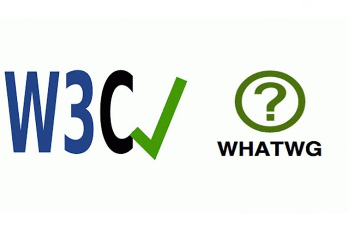
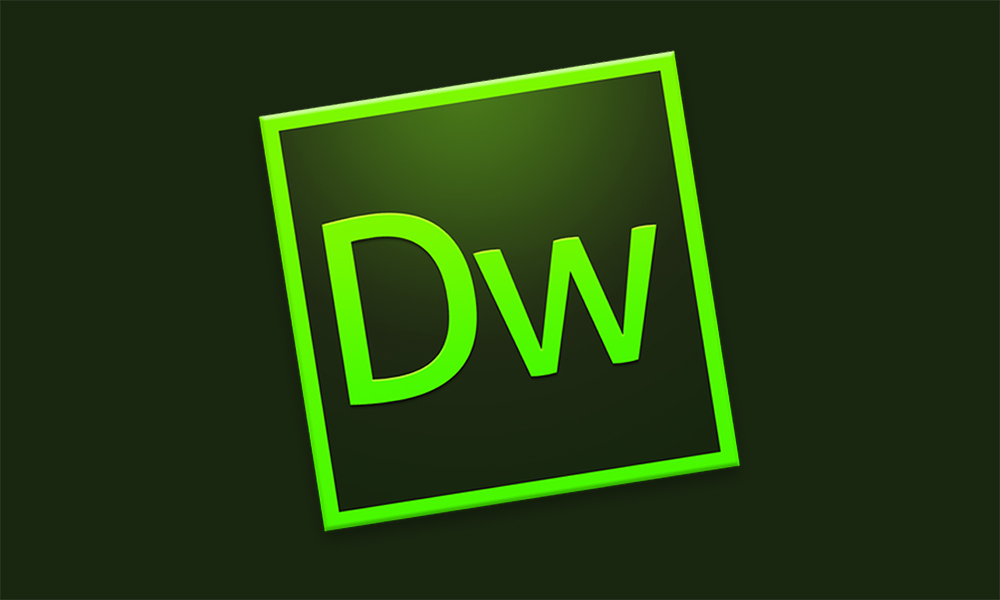
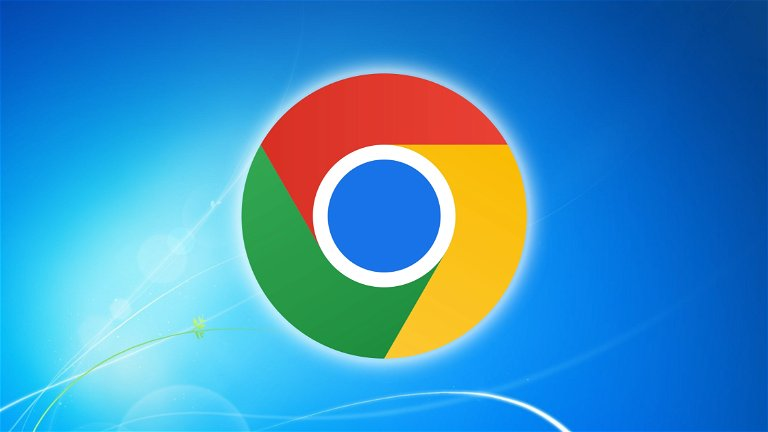

2004 - Web 2.0
Tim O'Reilly acuña el término "Web 2.0" para describir una nueva generación de aplicaciones web colaborativas que facilitan el compartir información, y la olaboración en la World Wide Web.
La Web 2.0 se caracteriza por aplicaciones y servicios web que fomentan la participación activa de los usuarios, la colaboración y el intercambio de información. Algunos ejemplos de características de la Web 2.0 incluyen blogs, wikis, redes sociales, marcadores sociales y servicios de alojamiento de videos.

2004 - Facebook
Lanzado por Mark Zuckerberg, inicialmente concebido como una red social exclusiva para estudiantes universitarios. Inicialmente limitado a estudiantes de Harvard, Facebook se expandió rápidamente a otras universidades y eventualmente al público en general. Marcó el inicio de las redes sociales dominantes y cambió la forma en que las personas se conectan, comparten información y se comunican en línea.
Facebook se convirtió en una de las redes sociales más grandes y populares del mundo, permitiendo a los usuarios conectarse, compartir contenido, interactuar y comunicarse con amigos y familiares.
2004 - WHATWG
Apple, Mozilla y Opera se unieron para formar la WHATWG, una organización enfocada en el desarrollo y la evolución de las tecnologías web, en lo que respecta al lenguaje de marcado HTML y sus estándares relacionados.
WHATWG ha sido fundamental en el desarrollo de estándares web abiertos y en la evolución de HTML y otras tecnologías relacionadas. El grupo ha contribuido significativamente al desarrollo de HTML5, CSS3 y otras especificaciones web modernas.
2006 - Twitter
Lanzado por Jack Dorsey, Biz Stone y Evan Williams. Se convirtió en una herramienta popular para compartir noticias, pensamientos, opiniones y actualizaciones en tiempo real.
Twitter se convirtió en una de las redes sociales más populares del mundo, utilizada para compartir noticias, opiniones, actualizaciones personales y más. La plataforma también ha sido utilizada para la difusión de información en tiempo real durante eventos importantes y emergencias.

2007 - Dreamweaver
Es una aplicación en programa de estudio (basada en Adobe Flash) que está destinada a la construcción, diseño y edición de sitios, vídeos y aplicaciones Web basados en estándares.
Dreamweaver ha sido una de las herramientas de desarrollo web más populares y ampliamente utilizadas, permitiendo a los desarrolladores crear sitios web y aplicaciones web de manera más eficiente. La aplicación incluye funciones de administración de sitios que permiten a los usuarios organizar y gestionar archivos y recursos asociados con un sitio web, así como funciones de prueba y publicación que facilitan la vista previa y el despliegue de sitios web en servidores remotos. A lo largo de los años, Dreamweaver ha evolucionado con el tiempo, incorporando nuevas características y mejoras para mantenerse al día con las últimas tendencias y tecnologías web.
2008 - Chrome
Nacimiento de Chrome por Google. Se convirtió en uno de los navegadores web más populares y ampliamente utilizados en todo el mundo.
Chrome presentó varias características innovadoras, como la barra de direcciones omnibox, la función de búsqueda rápida, la capacidad de navegar en modo incógnito y el motor de renderizado rápido V8. Desde su lanzamiento, Google Chrome ha ganado una gran cuota de mercado y se ha convertido en uno de los navegadores web más populares y ampliamente utilizados del mundo. A lo largo de los años, Google Chrome ha ganado una gran cuota de mercado y se ha convertido en uno de los navegadores web más populares y ampliamente utilizados del mundo, disponible para varias plataformas, incluidas Windows, macOS, Linux, Android e iOS.
